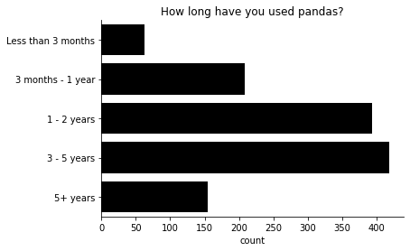
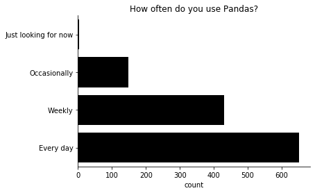
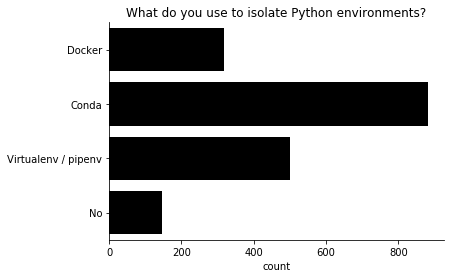
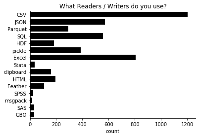
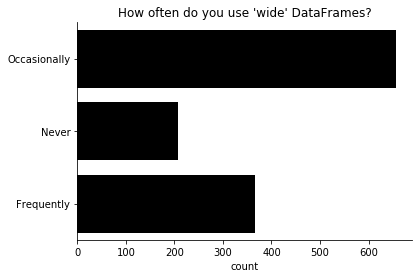
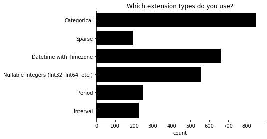
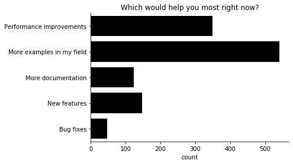
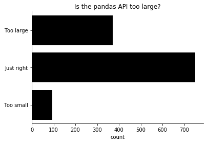
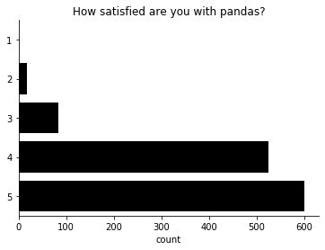

2019 pandas user survey
Pandas recently conducted a user survey to help guide future development. Thanks to everyone who participated! This post presents the high-level results.
This analysis and the raw data can be found on GitHub and run on Binder

We had about 1250 responses over the 15 days we ran the survey in the summer of 2019.
About the Respondents
There was a fair amount of representation across pandas experience and frequency of use, though the majority of respondents are on the more experienced side.


We included a few questions that were also asked in the Python Developers Survey so we could compare Pandas' population to Python's.
90% of our respondents use Python as a primary language (compared with 84% from the PSF survey).
Yes 90.67%
No 9.33%
Name: Is Python your main language?, dtype: object
Windows users are well represented (see Steve Dower's talk on this topic).
Linux 61.57%
Windows 60.21%
MacOS 42.75%
Name: What Operating Systems do you use?, dtype: object
For environment isolation, conda was the most popular.

Most repondents are Python 3 only.
3 92.39%
2 & 3 6.80%
2 0.81%
Name: Python 2 or 3?, dtype: object
Pandas APIs
It can be hard for open source projects to know what features are actually used. We asked a few questions to get an idea.
CSV and Excel are (for better or worse) the most popular formats.

In preparation for a possible refactor of pandas internals, we wanted to get a sense for how common wide (100s of columns or more) DataFrames are.

Pandas is slowly growing new extension types. Categoricals are the most popular, and the nullable integer type is already almost as popular as datetime with timezone.

More and better examples seem to be a high-priority development item. Pandas recently received a NumFOCUS grant to improve our documentation, which we're using to write tutorial-style documentation, which should help meet this need.

We also asked about specific, commonly-requested features.

Of these, the clear standout is "scaling" to large datasets. A couple observations:
- Perhaps pandas' documentation should do a better job of promoting libraries that provide scalable dataframes (like Dask, vaex, and modin)
- Memory efficiency (perhaps from a native string data type, fewer internal copies, etc.) is a valuable goal.
After that, the next-most critical improvement is integer missing values. Those were actually added in Pandas 0.24, but they're not the default, and there's still some incompatibilities with the rest of pandas API.
Pandas is a less conservative library than, say, NumPy. We're approaching 1.0, but on the way we've made many deprecations and some outright API breaking changes. Fortunately, most people are OK with the tradeoff.
Yes 94.89%
No 5.11%
Name: Is Pandas stable enough for you?, dtype: object
There's a perception (which is shared by many of the pandas maintainers) that the pandas API is too large. To measure that, we asked whether users thought that pandas' API was too large, too small, or just right.

Finally, we asked for an overall satisfaction with the library, from 1 (not very unsatisfied) to 5 (very satisfied).

Most people are very satisfied. The average response is 4.39. I look forward to tracking this number over time.
If you're analyzing the raw data, be sure to share the results with us @pandas_dev.